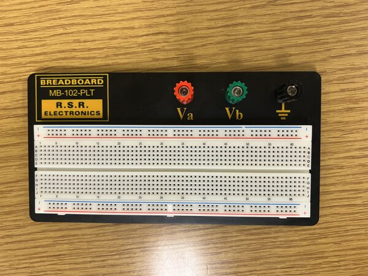
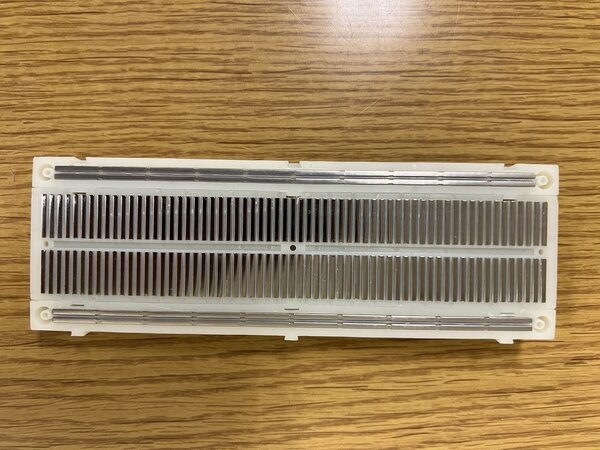
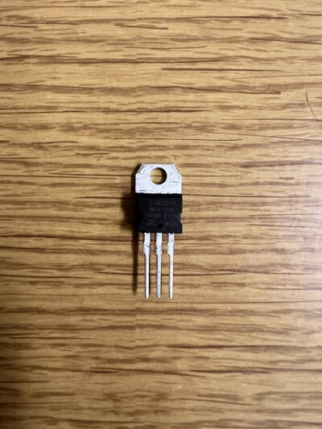
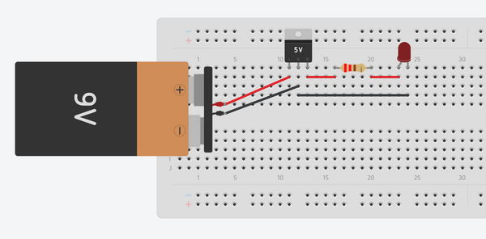

Introduction to Breadboards#
Extra material
Last updated January 9, 2023
00. Content #
Mathematics#
N/A
Programming Skills#
N/A
Embedded Systems#
N/A
0. Required Hardware #
Breadboard
Wires
LED
9V battery
Voltage Regulator IC (LM 7805)
220 ohm resistor
1. Breadboard Connections #
We will be using a breadboard throughout the labs to temporarily prototype all the experiments as it is easy to use without any soldering.
A typical breadboard looks like this:

The outer two rows on the top and bottom of the board are linked horizontally, which means that any two points on the same row will have the same electrical connection. The remaining areas are linked vertically in columns until the middle ridge. You can easily grasp this concept by taking a look at the inside of the breadboard.

Some Important Notes:#
The majority of electronic components used in the lab require either 3.3V or 5V DC power.
If you are uncertain about the safe operation of a component or any equipment in the lab, please consult a TA.
The longest leg of an LED is the anode, which should be connected to the positive side.
Always check with a member of the teaching staff before powering up the circuit.
Exercise: Wiring an LED on a breadboard#
The image below displays a voltage regulator IC that we will utilize to regulate the voltage to protect our circuit. We require this regulator because the battery we are using to power the circuit provides 9 volts, and we will employ this IC to lower the voltage to 5V.

When you face the IC as depicted in the figure above, the left pin serves as the input, the middle pin functions as the common ground, and the right pin acts as the output voltage (5V relative to ground).
Now you can begin wiring the circuit on the breadboard using this circuit diagram.
The circuit will look something like this.

The output of the voltage regulator will be 5V, but our LED is rated for 2.5-3V. Therefore, we will include a 220 ohm resistor in series with the LED to prevent it from being damaged.
If your circuit connections are correct, the LED should illuminate.
2. Submitting this Exercise #
You do not need to submit this exercise virtually. Once you have completed it, simply raise your hand, and your instructor will come to check your breadboard.